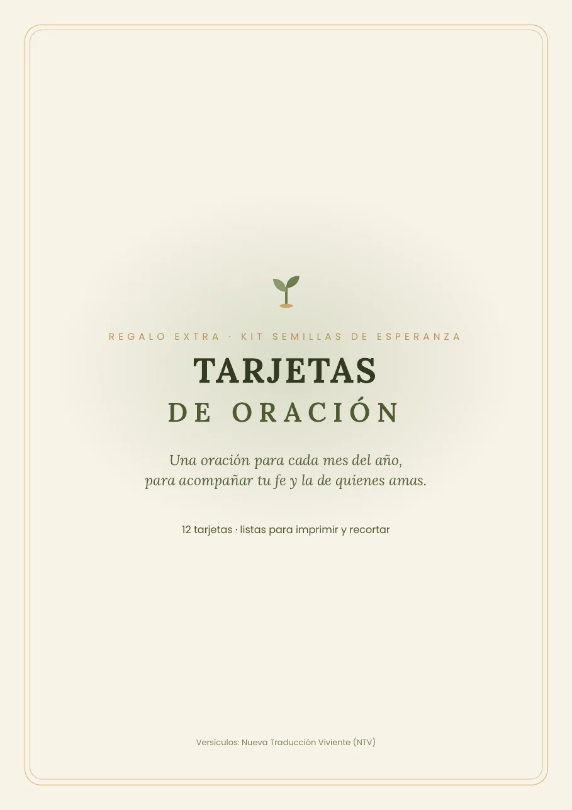
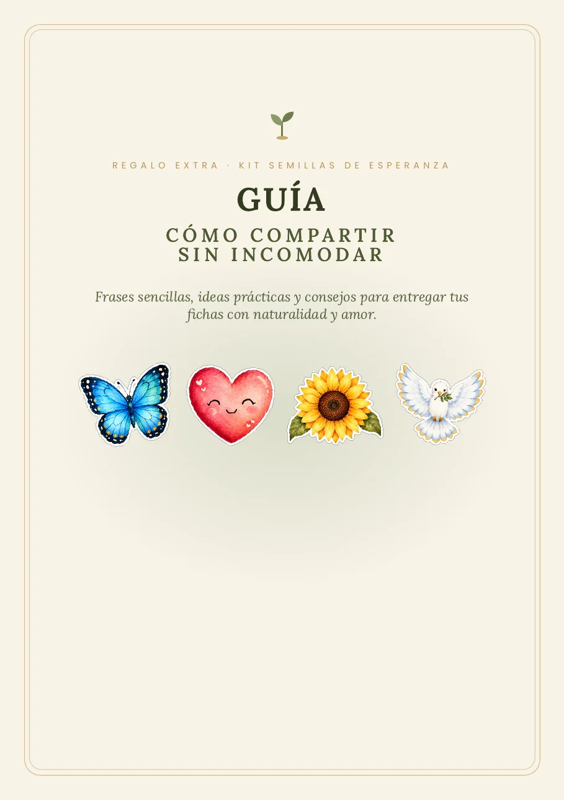
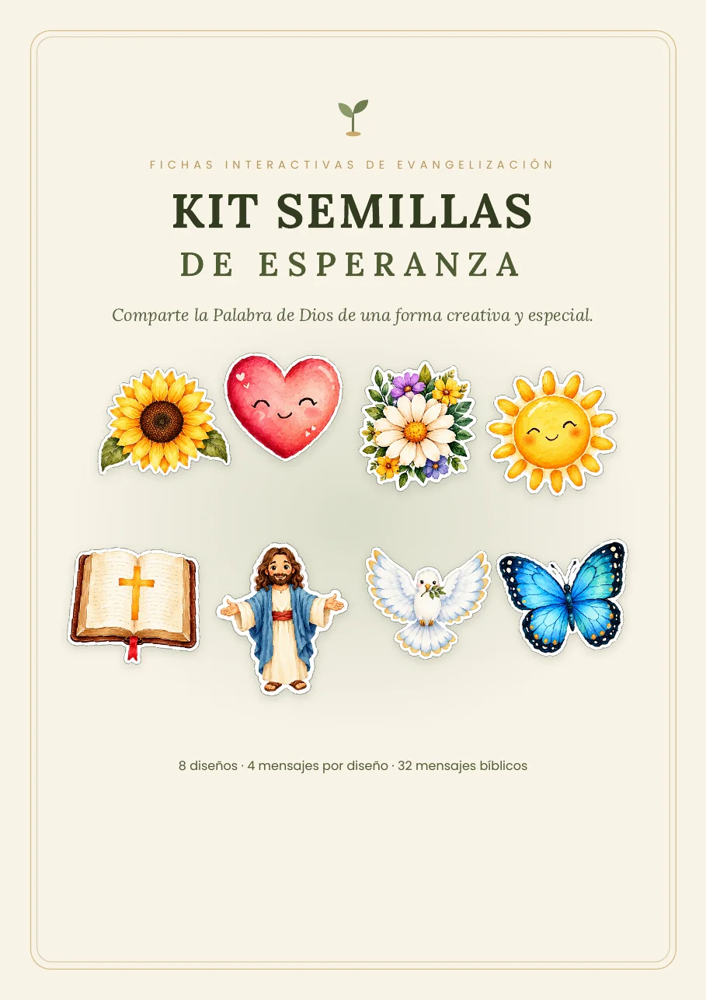

Recibe 32 mensajes bíblicos listos para imprimir, doblar y regalar
Material pedagógico cristiano para niños y adultos: en la escuela dominical, en el salón de clases y en casa.
Levanta la mirada.
Cuando no sabes a dónde ir, mira hacia arriba.
“Levanto la vista hacia las montañas, ¿viene de allí mi ayuda? ¡Mi ayuda viene del SEÑOR, quien hizo el cielo y la tierra!”
SALMOS 121:1-2 · NTV
Ficha de girasol abierta: Levanta la mirada. Salmos 121:1-2.
¿Te gustó la idea? Estas son las dudas más comunes
No soy maestra ni líder de la iglesia…
No hace falta. Mamás, abuelas, jóvenes y cualquier persona que quiera compartir esperanza puede usarlas.
Nunca he compartido mi fe con desconocidos…
No necesitas experiencia. La ficha habla por ti, y la guía incluida te da frases sencillas para entregarla con naturalidad.
No tengo mucho tiempo…
Imprimes, recortas y doblas en minutos. Puedes armar varias en una tarde, a tu ritmo.
No se me dan las manualidades…
Los diseños ya están hechos. Solo sigues las líneas: continua para recortar, punteada para doblar.
¿Necesito una impresora especial?
No. Sirve la impresora de casa o la de cualquier papelería, en papel carta o A4. En opalina o cartulina delgada se ven todavía más bonitas.
Mensajes bonitos, listos para imprimir. Y mucha gente esperando una palabra de ánimo
Cada ficha se entrega cerrada, como una flor, un corazón o una mariposa. Al abrirla aparece un mensaje y un versículo de la Biblia.
- Familias
- Escuela dominical
- Ministerio infantil
- Colegios cristianos
- Clase de valores
- Catequesis
- Células y grupos
- Visitas a hospitales y asilos
Sirve todo el año
Regreso a clases, fechas especiales, visitas y domingos de bienvenida: siempre hay una ocasión para regalar una ficha.
Imprime las veces que quieras
Lo compras una vez y lo usas con tu familia, tu grupo y tu ministerio, cuantas veces necesites.
Para niños y adultos
Mensajes sencillos que entiende un niño y que animan a un adulto. Los pequeños pueden ayudar a recortar y armar.
Un año de semillas: 8 diseños para cada temporada
Cada diseño tiene un tema. Elegir el adecuado hace que el mensaje llegue justo al corazón.
- Enero
Año nuevo
Mariposa: para quien quiere empezar de nuevo.
- Febrero
Amor y amistad
Corazón: para quien se siente solo o poco valorado.
- Marzo · abril
Semana Santa
Jesús: para quien está lejos de Dios o nunca lo ha conocido.
- Mayo
Día de las Madres
Flores: vida y esperanza para una nueva etapa.
- Agosto
Regreso a clases
Sol: luz para el camino de cada día.
- Septiembre
Mes de la Biblia
Biblia: para quien busca respuestas y dirección.
- Noviembre
Tiempo de gratitud
Girasol: para levantar la mirada y recuperar la alegría.
- Diciembre
Navidad
Paloma: paz y descanso para un corazón preocupado.
Cuatro mensajes por diseño, con versículos de la Nueva Traducción Viviente.
Preparar material desde cero, o empezar hoy
Hacerlo desde cero
- Semanas buscando versículos y diseñando
- Pagar a un diseñador o una imprenta
- Pocas ideas para tu grupo o tu clase
- Llegar a la reunión con las manos vacías
Con el Kit Semillas de Esperanza
- 8 diseños y 32 mensajes listos desde el primer día
- Versículos ya elegidos por tema
- Instrucciones paso a paso para armarlas
- Empiezas a compartir el mismo día
Y para que compartas con más confianza: 2 regalos incluidos

Tarjetas de Oración
12 tarjetas, una oración para cada mes del año: por la familia, por la salud, por los hijos, en tiempos de ansiedad y más. Listas para imprimir y recortar.

Guía: Cómo compartir sin incomodar
Frases sencillas para la calle, el trabajo, la escuela o el hospital, qué diseño entregar a cada persona e ideas para usar las fichas en grupo.

Kit Semillas de Esperanza completo
Pago único por SPEI. Sin mensualidades.
- 8 diseños · 32 mensajes bíblicos en fichas que se abren
- Instrucciones para imprimir, recortar y doblar
- Regalo: 12 Tarjetas de Oración
- Regalo: Guía Cómo compartir sin incomodar
- Acceso al Grupo VIP de WhatsApp
- Imprime cuantas veces quieras para uso personal, familiar y ministerial
¿Te quedó alguna pregunta?
¿Para qué edades sirve?
Para niños y adultos. Los mensajes son cortos y sencillos, así que funcionan en la clase de niños y también para animar a un adulto. Los más pequeños pueden ayudar a recortar y armar las fichas.
¿Puedo imprimirlas varias veces?
Sí, todas las que quieras para uso personal, familiar, ministerial y evangelístico. Lo único que no está permitido es revender o compartir los archivos digitales.
¿Qué versión de la Biblia usan?
Todos los versículos son de la Nueva Traducción Viviente (NTV), con su crédito correspondiente.
¿Cómo pago?
Por transferencia SPEI desde la aplicación o el sitio web de tu banco. Al generar tu pago verás la CLABE, la referencia y el monto exacto, listos para copiar.
¿Cómo recibo el acceso?
En cuanto se confirma tu transferencia, en esa misma página aparece el botón para entrar a nuestro Grupo VIP de WhatsApp, donde recibes tu material, novedades y devocionales semanales.
¿Tiene mensualidad?
No. Es un pago único de $150 MXN.
Tu próxima ficha puede cambiar el día de alguien
Empieza hoy con 32 mensajes listos para imprimir, dos regalos para compartir con confianza y un grupo que te acompaña.
Quiero mi kit por $150 MXN